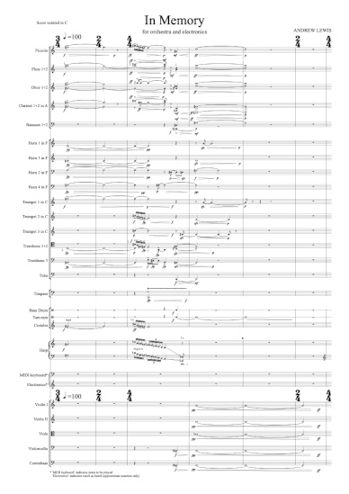

Date of composition: 2021
Duration: c. 9 min
Format: Orchestra (3.2.2.2 / 4.3.3.1 / timp. 2 perc. hp. kbd. / strings / electronics)
Premiere: 11 November 2022, Bangor, Wales (UK)
BBC National Orchestra of Wales/Gergely
Madaras
Prichard Jones Hall, Bangor University
First broadcast: 'Radio 3 in Concert', BBC Radio 3, 15 November 2022: BBC National Orchestra of Wales/Gergely Madaras
Excerpt
Score: available
soon from Composers' Edition

Materials for electronics: download
here
Programme note:
(download as PDF)
In Memory is a reflection on life with dementia, and especially the experience of unpaid family carers. Extracts from recorded conversations with family carers are woven into the fabric of the piece, forming its melodies, harmonies and rhythms.
The title In Memory carries different meanings. It is the sense of identity that resides in memory, and a memorial that marks its loss. It is the memories of those caring for people with dementia, memories of the person as they were, and more recent memories of the challenges their caring role now brings. It is also an invitation to keep in memory the dedication of the many thousands of unpaid family carers, whose work often goes unrecognised. Finally, the piece is offered in memory of all who have been lost to dementia, and as a celebration of what remains when all else is forgotten.
In Memory was commissioned by the BBC and Bangor University as part of Cerddoriaeth 100 / Music 100, with financial support from Tŷ Cerdd. I am grateful to Joanna Griffiths, Sue Last and Mary Mitchell for generously sharing their thoughts and experiences. Their voices are the music of In Memory.